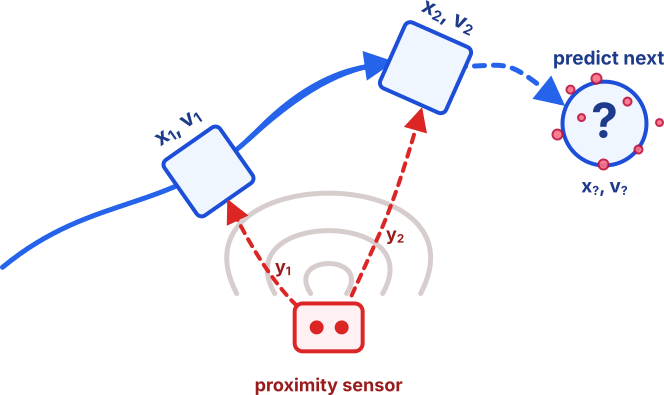
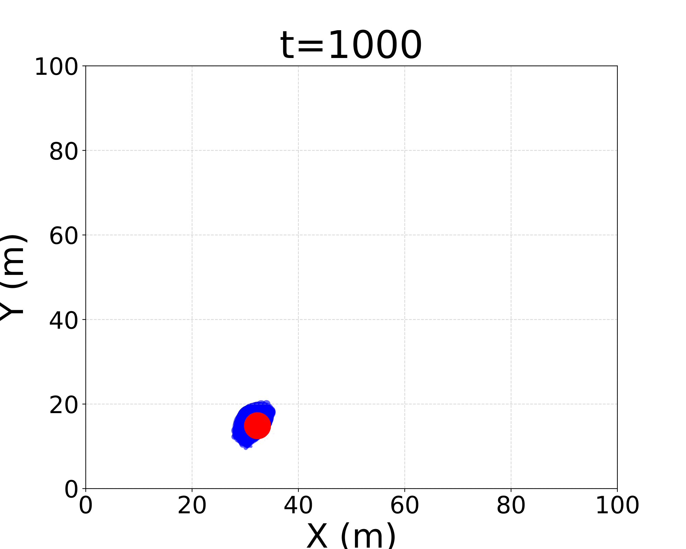
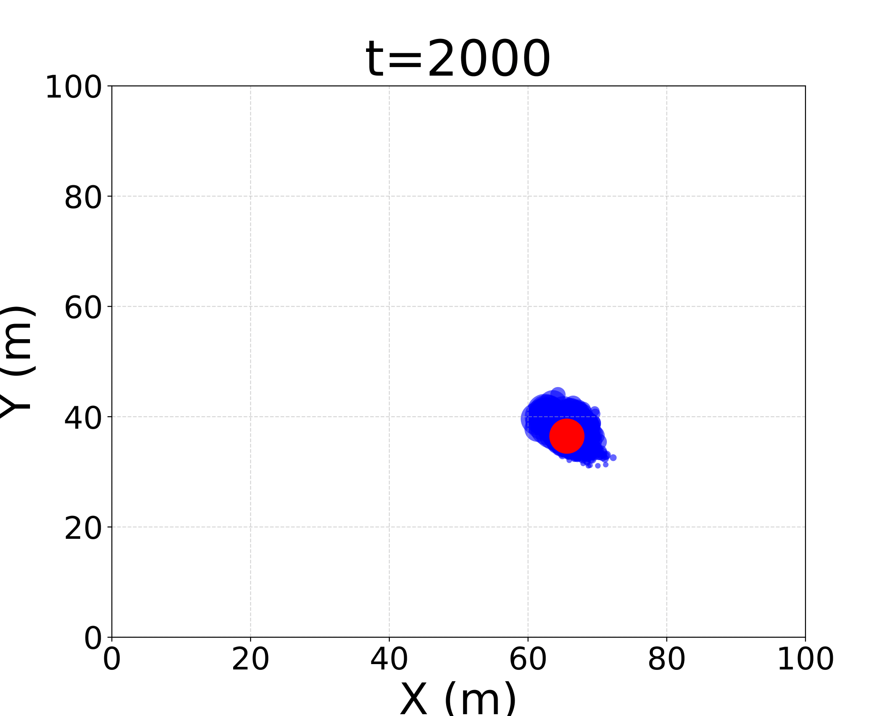
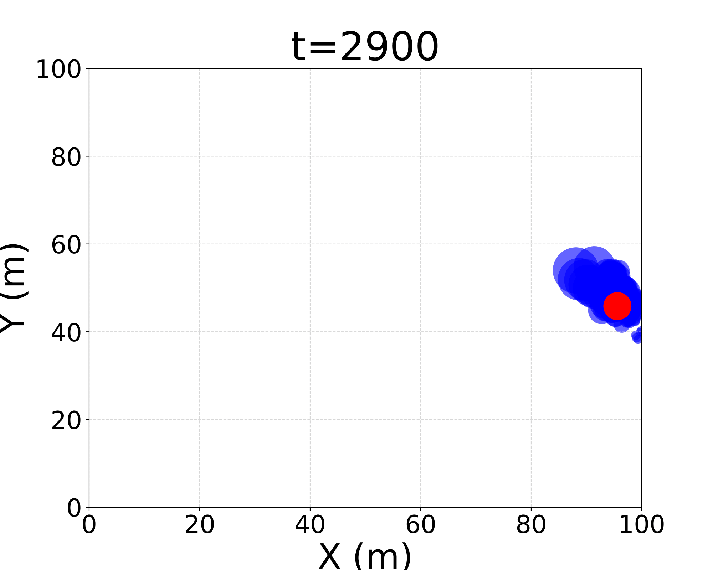
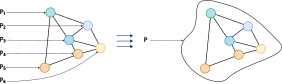
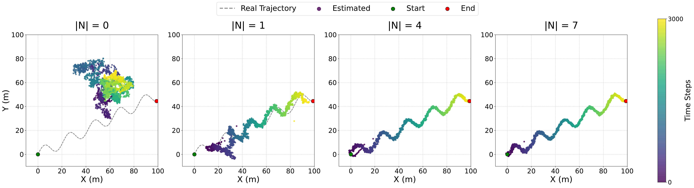
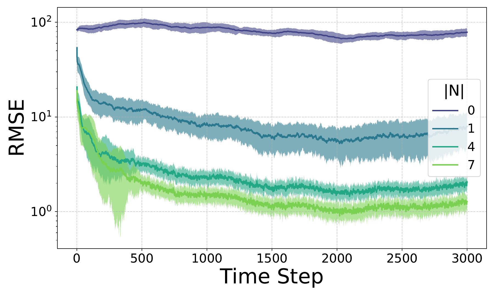
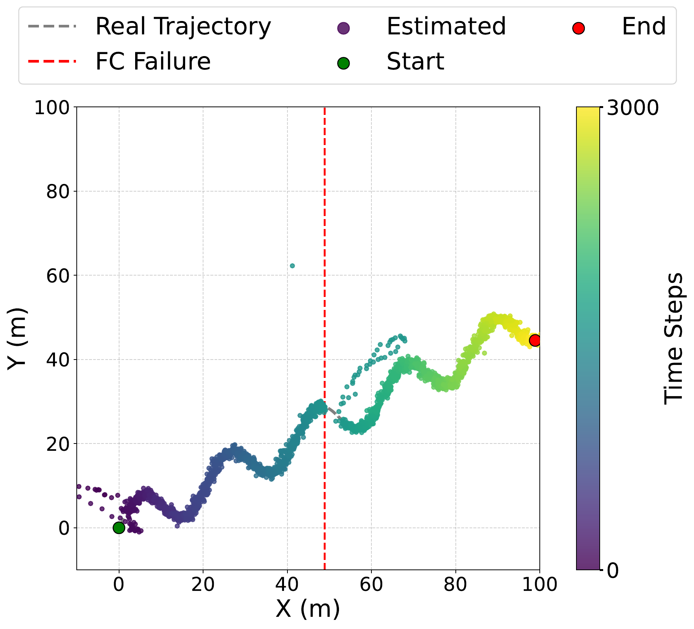

Flexible Distributed Particle Filtering for the Internet of Things via Aggregate Computing
Angela Cortecchia, Davide Domini, Giovanni Ciatto, Roberto Casadei, Danilo Pianini, and Mirko Viroli
Department of Computer Science and Engineering (DISI)
Alma Mater Studiorum – University of Bologna - Cesena, Italy

Motivation
In IoT, particle filtering is not only an estimation problem: it is a coordination problem.
Many cyber-physical systems must estimate a hidden dynamical state from distributed, noisy observations.
Examples:
- target tracking
- environmental monitoring
- mobility and traffic
- smart-city sensing
Constraint
No single device directly observes the full state.

Tracking intuition: sensors observe fragments of evidence; the system reconstructs the target trajectory.
From Observations to a Posterior Estimate
We want to reconstruct a latent state over time:
$$ \text{hidden state} \quad x_t $$
from partial and noisy observations:
$$ \text{observations} \quad y_{1:t} $$
Filtering objective
Estimate the posterior distribution:
$$ p(x_t \mid y_{1:t}) $$
This distribution represents uncertainty over the current state.
partial measurements
uncertainty remains explicit
Why particle filters?
Classical linear estimators are not enough when dynamics are non-linear and uncertainty is non-Gaussian.

Particle Filters
A particle filter represents belief with a cloud of weighted hypotheses.
- each particle is one possible state
- each weight says how plausible it is
- likely particles survive
- unlikely particles fade out
One iteration:
$$ \text{predict} \rightarrow \text{weight} \rightarrow \text{resample} \rightarrow \text{estimate} $$

The estimate is a distribution, not only a point.
Particle Filter Over Time
many possible hypotheses

belief concentrates

the cloud follows the target

uncertainty remains explicit
The particle cloud follows the target while keeping the estimation error visible as uncertainty.
Distributed Particle Filters
In IoT systems, observations are naturally collected by many spatially distributed devices.
Centralized PF
All observations are assumed to be available to one estimator:
$$ p(x_t \mid y_{1:t}) $$
Simple, but unrealistic for open IoT deployments.
Distributed PF
Each device observes only local information:
$$ y_{t,k} = h_k(x_t, v_{t,k}) $$
The goal is to approximate a global belief through local cooperation.
DPF keeps the filtering logic, but turns estimation into a coordination problem.
DPF: many coordination choices
DPF algorithms differ mainly in how they move, combine, and exploit information across the network.
Design choices include:
- where information is fused
- what information is exchanged
- how far information propagates
- which nodes participate
Particle Filters
Particle Filters
Particle Filters
Particle Filters
Particle Filters
Particle Filters
What Makes DPF Hard?
Communication constraints 📡
Bandwidth, latency, energy, and robustness make centralized collection unrealistic.
Networks change 🌐
Delays, topology changes, asynchrony, and failures affect estimation.
Trade-offs ⚖️
Accuracy, overhead, complexity, and robustness must be balanced.
Aggregate Computing
A macroprogramming approach to coordination

Aggregate Computing lets developers describe the behaviour of a collective system, rather than programming each device separately.
The program manipulates computational fields: distributed values evolving across the network.
Why it helps coordination
Field-level patterns make common distributed behaviours reusable:
- spreading information
- aggregating local evidence
- converging data to selected nodes
- electing leaders dynamically
Key intuition: devices execute local code, but the programmer reasons in terms of global coordination patterns.
AC Computational Model
From collective program to local execution
AC programs are specified at the collective level, but executed independently by each device.
At every local round, a device updates its state from:
- local sensor readings
- previous local state
- messages received from neighbours
This makes field-level coordination executable on asynchronous IoT networks.
Round-based model
Why it matters for DPF: each node can run the filtering step locally, while AC controls how evidence is exchanged and propagated.
Key Idea: DPF as a Field Computation
The goal is not to introduce yet another DPF algorithm.
DPF becomes a configurable field computation: filtering stays standard, coordination becomes programmable.
Filtering logic
This remains standard:
- prediction
- weighting
- resampling
- estimation
Coordination choices
These become programmable:
- where fusion happens
- what is exchanged
- how far information propagates
- who is active
Architectural assumptions become design parameters.
Contribution 1:
Aggregate measurement function
Each node keeps its own local particle filter. Instead of exchanging particle sets, neighbors share measurements that are combined during the weighting step.
Nearby sensors collectively behave like a distributed sensor. This can be cheaper than exchanging particle sets.
Contribution 2:
Self-Healing Fusion Center
Leader-based fusion as a field-level behavior
- Election: A leader is selected dynamically.
- Fusion: The leader behaves as the current fusion center.
- Failure: If the leader disappears, the role is released.
- Self-healing: A new leader resumes the behavior.
We can move along the spectrum between centralized simplicity and decentralized robustness through configuration.
Experimental Evaluation
Scenario
- 2D target tracking
- 25 static sensors on a perturbed grid
- sensors execute at 1 Hz
- 3000 simulated seconds
- 100 random seeds per configuration
Sensor model
Each sensor observes the target through a radio-like signal:
- closer target → stronger and cleaner signal
- farther target → weaker and noisier signal
So, not all sensors are equally informative at every time step.
Evaluated configurations
-
Local PF + aggregated measurements
- each sensor has its own PF
- only measurements are shared
-
Elected leader as fusion center
- measurements converge to a leader
- leader failure injected at time step 1500
Experiment 1
Each sensor keeps its own local particle filter.
No particles are exchanged.
Only the measurement used for weighting changes:
$$ |\mathcal{N}| \in {0, 1, 4, 7} $$
Small neighborhood → weak local evidence → high error
Larger neighborhood → aggregated evidence → better tracking

Experiment 1 results: RMSE

- RMSE measures the distance between the estimated target position and the real one.
- With few neighbors, the error remains high.
- Increasing $|\mathcal{N}|$ reduces RMSE and improves long-term stability.
- The benefit comes from sharing measurements, not particle sets.
Experiment 2: Self-Healing Fusion
An elected leader plays the fusion-center role.
At time step 1500, the leader fails.
The system shows:
- Transient during initial leader election
- Convergence to a valid estimation
- Transient after leader failure
- Resumed tracking after re-election
Fusion-center behavior can be retained without a permanently fixed center.

The red line marks the failure; the following deviation is the temporary tracking error caused by reconfiguration.
Takeaways and Future Work
Takeaways
Filtering stays standard; coordination becomes programmable.
Fusion, dissemination, and active regions become configurable choices.
Local sharing improves tracking without exchanging particle sets.
Leader election preserves fusion-center behaviour after failures.
Future work
Explore more AC design dimensions:
- broader spectrum of coordination strategies for propagation and fusion
- activation only in relevant regions
Extend the scenarios:
- multiple moving targets
- flocking-inspired coordination for moving targets
- heterogeneous sensing modalities
- richer deployment conditions